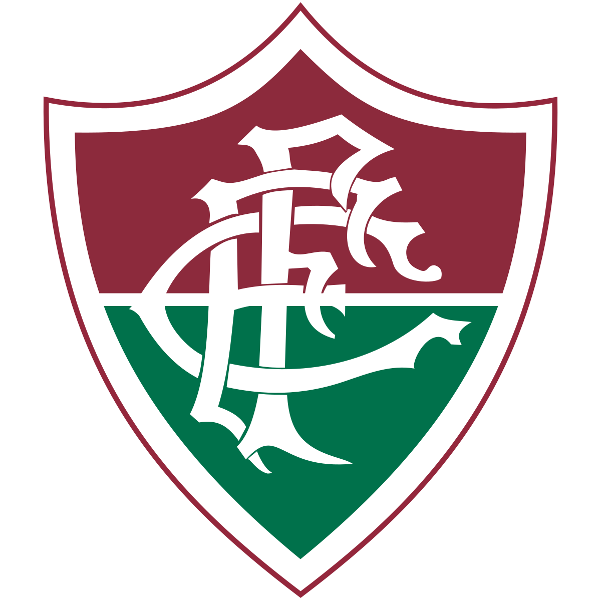

FLUMINENSE FOOTBAL CLUB

Sou tricolor de coração
Sou do clube tantas vezes campeão
Fascina pela sua disciplina
O Fluminense me domina
Eu tenho amor ao tricolor
Salve o querido pavilhão
Das três cores que traduzem tradição
A paz, a esperança e o vigor
Unido e forte pelo esporte
Eu sou é tricolor
Vence o Fluminense
Com o verde da esperança
Pois quem espera sempre alcança
Clube que orgulha o Brasil retumbante
De glórias e vitórias mil
Sou tricolor de coração
Sou do clube tantas vezes campeão
Fascina pela sua disciplina
O Fluminense me domina
Eu tenho amor ao tricolor
Salve o querido pavilhão
Das três cores que traduzem tradição
A paz, a esperança e o vigor
Unido e forte pelo esporte
Eu sou é tricolor
Vence o Fluminense
Com o sangue do encarnado
Com amor e com vigor
Faz a torcida querida vibrar com emoção
Do tricampeão